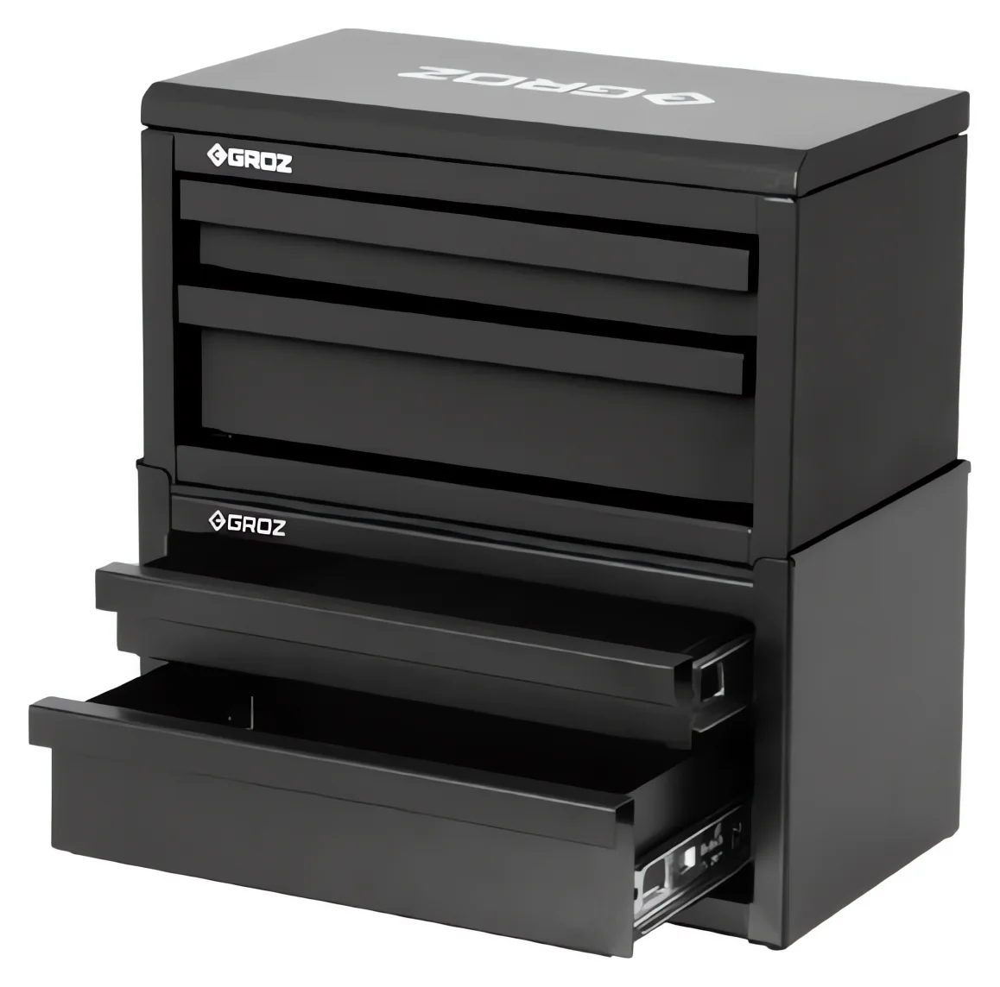

GROZ · Tool Storage
11" Mini Tool Box Set Stackable
CAT NR TCHS/11-10D/1/BL/GRZ/ST2 · ORD NR 75416
| CAT NR (catalogue number) | TCHS/11-10D/1/BL/GRZ/ST2 |
|---|---|
| ORD NR (order number) | 75416 |
| Box quantity | 1 |
| Overall load capacity | 15 KG (33 LBS) |
| Drawer load capacity | 2.5 KG (5.5 LBS) |
| Net weight | 5 KG (11 LBS) |
| Steel gauge | 0.60 mm (24 gauge) |
Open in the catalogue The catalogue PDF, page 42-43
From the GROZ Tool Storage catalogue. Not yet verified: these details were read from the printed catalogue automatically; check the catalogue page before ordering.